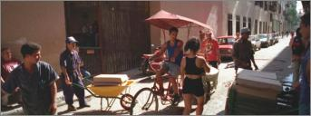
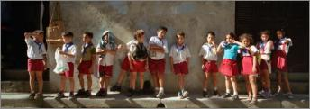

%1
While photographing many photographers have in their "mind's eye" famous photographs taken by other photographers. Such was the case when I saw this woman walking down the street in Vieja Havana, Cuba, being watched by these construction workers. This resulting picture is similar to Ruth Orkin's famous "American Girl in Italy, 1951," although that photograph was partially set up, this one is pure happenstance. This photograph was made using a Hasselblad X-pan camera. Click image to enlarge. |
|||
The elementary school children are playing during recess in Havana Vieja, Cuba. The image was taken with a Hasselblad x-pan camera. Click image to enlarge. |
|||
This photograph was created on my last day of my last trip to Cuba in 2002. This former convent had been converted to an old person's home, and this old man was sitting in the shade near the statue when I approached him and asked if I could take his photo. The panoramic aspect of the Hasselblad x-pan camera enabled me to place the old man and the bust of Christ in the same frame. Click image to enlarge. |
|||
This vertical panoramic photograph of a middle school girl on a street corner was taken in Havana Vieja, Cuba with a Hasselblad x-pan camera. While is appears that the girl has a cell phone to her ear, this picture was taken in 2002, and cell phones could not be purchased by ordinary Cubans until a decree was issued by Raul Casto in early 2008 allowing Cubans to own personal cell phones. Click image to enlarge. |
|||
These elementary school children are lined up old Havana, Cuba, to re-enter school after their lunch period. While students are in school all day, the teachers only teach a half day as there are many more qualified teachers than there are spaces for them. This panoramic photograph was taken with a Hasseblad x-pan camera Click image to enlarge. |
|||
These towels and other items are being hung out to dry in Havana Vieja, Cuba. Washers and dryers are almost unheard of for Cubans, and the climate makes it unnecessary to have a dryer most of the year. This panoramic photograph was taken with a Hasselblad X-pan camera. Click image to enlarge. |
|||
In Havana the bus service is so limited that in the late afternoon people line up in the hot sun to wait for the "Camel" buses to transport them out of the city. The "camel" buses are to disappear under a decree issued by Raul Castro in 2008. This photograph was taken in 2002 with a Hasselblad x-pan on the Paseo de Marti opposite the Capitolio Nacional in Vieja Havana. Click image to enlarge. |
|||
This photograph of two middle school girls in their yellow and white school uniform was taken in Vieja Havana with a Hasselblad X-pan camera. The building entry is typical of the condition of many of the buildings in Havana and other parts of Cuba. Once the girls trade in their red and white elementary school uniforms for the middle school uniform they are much less willing to have their photograph taken. This image was taken on the shady side of the street, and I barely stopped to take the photo, using a slow shutter speed. Click image to enlarge. |
|||
This photograph is taken in the province of Pinar del Rio in western Cuba. I went to western Cuba with three fellow photography students to see the karst rock formations near Vinales, and we happened on this white farm house in the tobacco field. Only upon walking up to the house did I realize the workers would make a good photograph as well. This photo was taken with a Hasselblad X-pan camera. Click image to enlarge. |
|||
This heavily shadowed photograph of a boy walking to school was taken early in the morning with a Hasselblad X-pan camera using a 90mm lens, in the city of Trinidad in central Cuba. I first noticed the shadows and the vibrant colors, and waited for someone to enter the frame to create the picture. Trinidad has been declared a UNESCO World Heritage site due to the large number of historical and architectural sites that are virtually untouched for the last two centuries. Click image to enlarge. |
|||